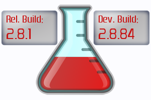

Downloads
From Essentials
Contents |
Build Status

Download
| Essentials Breakdown | |
| Essentials Downloads |
| General | → All commands conflict with this plugin. |
| MyWarp | → /warp |
| MyHome | → /home, /sethome |
| SpawnControl | → /spawn, /setspawn, /home, /sethome |
| WorldGuard | → /heal, /god , /info, EssentialsProtect.jar also conflicts |
| MCBans | → /ban, /unban |
| SpawnList | → /item, (/i might be ok) |
Installing Essentials Plugins
Beginners
- Read the FAQ first before asking questions: FAQ
Get CraftBukkit
- Essentials will soon begin building against only the recommended CraftBukkit builds.
- Ensures less CraftBukkit updates.
- Ensures less compatibility issues between plugin builds.
- Overall less bugs and more stability for server owners.
- Get the recommended version of CraftBukkit: Safe Build
Archived (zip) file Instructions
- Make sure your server is not running.
- Open the zip archive
- Extract the .jar files you want from the archive, into your plugins directory. (NOTE: not the target folder, but the .jar files themselves.)
- TIP: On Linux, you can do this easily by downloading Essentials.zip to your plugins directory, then typing in the terminal unzip -j <dir>/plugins/Essentials.zip to ignore the subdirectories, where <dir> is the directory your plugins folder is in. Remove unwanted plugins.)
- Start the server.
- If you made a backup of your config.yml file, stop the server and edit the newly generated config.yml file with only what you need, from the backup.
- Start the server.
- Enjoy!
Single File(s) Instructions
- Make sure your server is not running.
- If you haven't done so already, move the downloaded jar files to your plugins directory.
- Start the server.
- If you made a backup of your config.yml file, stop the server and edit the newly generated config.yml file with only what you need, from the backup.
- Start the server.
- Enjoy!